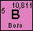
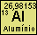
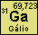
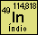
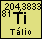
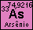
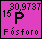
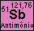
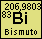

Projeto de Semicondutores Extrínsecos
~
:
Para o semicondutor do tipo P, possíveis materiais dopantes são:





Para o semicondutor do tipo N, possíveis materiais dopantes são:




AVISO: PARA A FAIXA DE TEMPERATURA INFORMADA, O SEU SEMICONDUTOR NÃO TERÁ UMA CONDUTÂNCIA CONSTANTE!
AVISO: A TEMPERATURA DE OPERAÇÃO DESEJADA PODE FAZER COM QUE O SEU SEMICONDUTOR DERRETA!